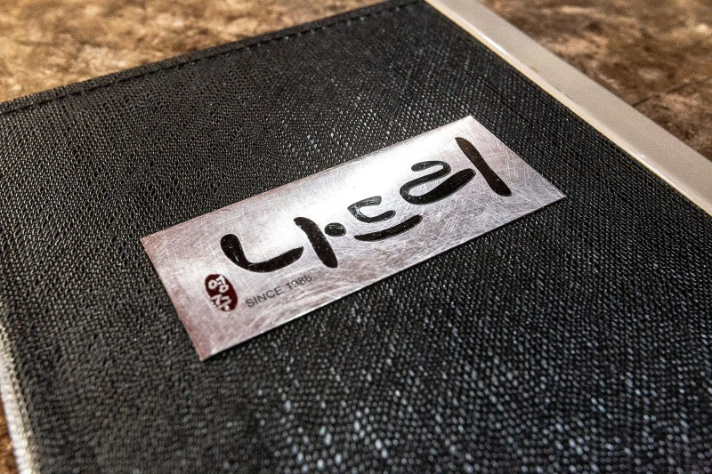

Y E O N G J U
Product by Jeongsoo
Na
Product by Jeongsoo
Na
Let me introduce my hometown Yeong Ju
Where : Yeongju Gyeongsangbuk-do Korea
[ 소개 ]
옛 선조들이 학문을 닦고 자연을 벗삼아 지키던
태백산맥 소백산자락에 자리잡아 물길은 낙동강으로 이어지는
아름다운 선비의 고장
▼ move cursor in image

대한민국 7대 사찰 중 하나
승려를 사랑한 여인이 용이 되어
스님과 절을 지켰다는 이야기를 갖고있다.
국보 제 18호
우리나라에서 가장 오래된 목조건물
신라시대에 지어져 고려시대에 재 건축된 건물
부석사에서 바라본 소백산
경상도를 소백산맥의 남쪽에 있다하여 영남이라 한다.
여우가 산다하니 찾아보자.
영주 무섬마을은 조선시대 중기인 17세기 중반에 자리를 잡은 유서 깊은 전통마을이다.
무섬마을은 물 위에 떠 있는 섬을 뜻하는 수도리의 우리말 이름으로 삼면이 내성천과 접해있는 전형적인 물도리 마을로 마을 앞을 돌아나가는 내성천은 맑고 잔잔하며 산과 물이 태극 모양으로 서로 안고 휘감아 돌아 산수의 경치가 절경을 이룬다.
전통있고 많은 학자들을 배출한 곳으로 대부분이 전통 가옥으로 구성되어있다.
1979년 수도교가 건설될 때까지 마을과 바깥세상을 연결해주는 유일한 통로였다.
무섬마을의 유래와 역사를 한 눈에 볼 수 있는 곳
가까운 곳에 각종 전통문화체험과 다양한 볼거리가 있는 선비촌이 있다.
6.25사변 통에 월남하셔 국수집을 시작하신
할머님부터 며느리, 장손까지
3대째 손맛을 이어온 전통있는 맛집
 어린 시절 학교를 다니며 쫄면을 즐겨 먹었던 분들께서 명절이 되면
영주에 오셔서 나드리 쫄면을 먹기 위해 찾아주십니다.
찾아주시는 분이 많아져서 나드리는 북새통이 되고 밖으로
긴 줄이 늘어섭니다.
누구나 어릴 때 먹었던 음식에 대한 향수를 가지고 계시듯
나드리 쫄면도 그렇게 된 것 같아서 기분이 좋습니다.
나드리 쫄면은 경북 영주, 그 시절 그모습 그대로 자리 잡고 있습니다.
Production Time
2022.03 ~
Use
HTML5
CSS3
Javascript
Vanilla-JS
VScode
Google Font
GitHub